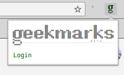
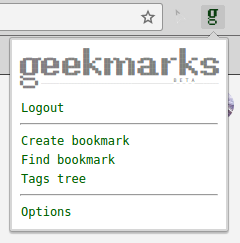
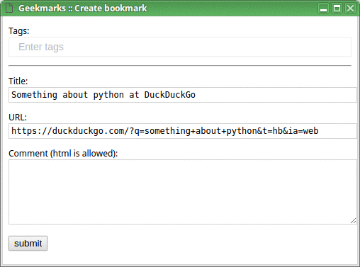
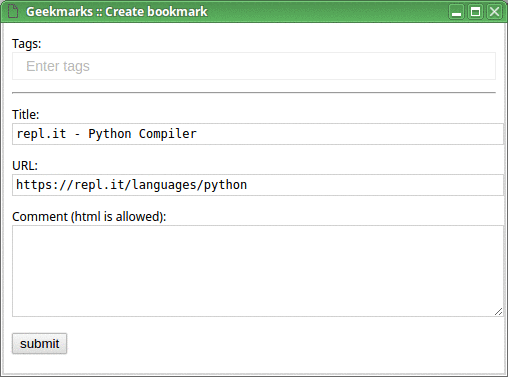
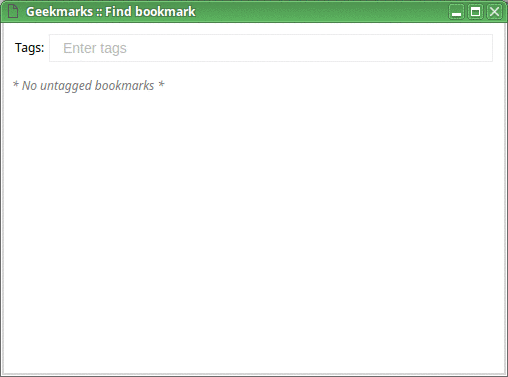

Rationale
In short, I want my bookmarking service:- To be very quick to use;
- To provide a way to organize my bookmarks in a powerful way.
I tried a lot of existing bookmarking services, and I wasn't satisfied by any of them, for a variety of reasons.
Let me elaborate on the organization part first. The simplest way to organize bookmarks is to introduce folders to group them. This still poses a well-known problem though: some bookmarks can logically belong to multiple folders. In order to address this issue, some services use tags: now we can tag a bookmark with more than one tag. So far so good.
Now, assume I have a generic tag programming, and a couple
of more specific tags: python and c. I
definitely want my bookmarking service to be smart enough to figure that
if I tag some article with either python or c,
it means programming as well; I don't want to add the tag
programming manually every single time. So, what we need is
a hierarchy of tags. Surprisingly enough, I failed to find a
service which would support that.
This hierarchical tags thing was a major motivation for me to start Geekmarks.
Another important thing is that I want bookmarking service to be very quick to use. I don't want to go through these heavy user interfaces and look at all the eye candy. In my daily life I just want to either add a bookmark or find one, and I want to do that quickly: like, just a few keystrokes, and I'm done.
And last but not least, I love open-source. So, meet Geekmarks! A free, open-source, API-driven bookmarking service.
Quick overview
After installing the Chrome extension, click on the "g" icon:
Log in (via Google account), and when it's done, menu will look as follows:
Now, on any page you want to bookmark, click "Create bookmark" from the menu (or use a hotkey; I personally use Shift+Ctrl+B), enter tags for your new bookmark, and save it. Tags which don't yet exist will be created on the fly.
When you do that for the first time, it might look as follows:
Later, when you have more tags, the process of adding a new bookmark will be faster, like this:
And this is how you find your bookmarks, after all (I use a Ctrl+B hotkey for that):
Please read the article for more details.